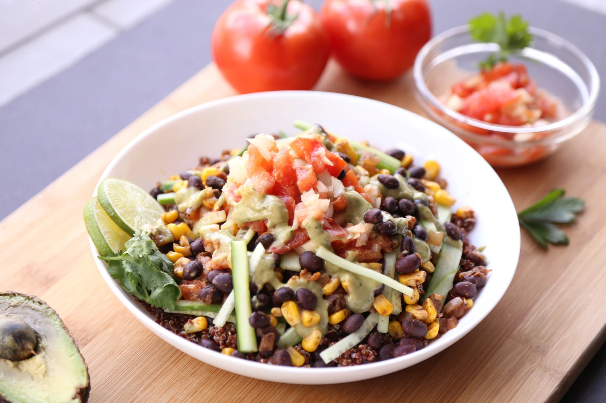

Registration Open
SUNNO 2.0
SUM Ultimate National Nutrition Orientation 2.0
Theme
Clinical Nutrition in Action: Identifying triggering issues and opportunities

Welcome to
SUM Ultimate Medicare
At SUM Ultimate Medicare, our vision is to become the ultimate destination for healthcare and healing. We are on a mission to provide next-generation treatments and care in patient-centric, technology-enhanced settings, aimed at improving the health of people. Our dedication lies in delivering the safest, most accessible, effective, and compassionate care with integrity and accountability, all within an ecosystem of healing that integrates excellence in medical research and education.
Comprehensive Care for Your Family
SUM Ultimate Medicare stands as a multispecialty quaternary care hospital, committed to medical excellence across a broad spectrum of medical and surgical interventions. We offer a complete range of follow-up services, ensuring that our patients receive continuous and comprehensive care.
State-of-the-Art Facilities and Innovative Research
We provide an atmosphere of healing with state-of-the-art healthcare facilities. Our hospital integrates a wide spectrum of clinical education and research opportunities, enabling us to offer advanced medical treatments and care. Our commitment to innovation ensures that we stay at the forefront of medical technology and practices.
A Hub for Medical Tourism and Organ Transplants
As a leading medical tourism hub in eastern India, SUM Ultimate Medicare attracts patients from across the region and beyond, offering world-class healthcare services. We are also renowned for our successful organ transplant programs, which have given many patients a new lease on life. Our expertise and comprehensive care make us a trusted destination for critical medical interventions.
Our Guiding Values
Our values are encapsulated in the Seven Pillars that guide us with integrity:
- Sincere Service
- Dedicated People
- Affordable Pricing
- Innovation & Distinctive Care
- Unmatched Quality
- Accountability
- Clinical Finesse
Pioneering Healthcare in Odisha
As a first-of-its-kind institution in Odisha, SUM Ultimate Hospital has pioneered groundbreaking healthcare technologies in the state. We are committed to serving beyond business imperatives, fostering patient healing and building a “Bridge of Trust” with the community. Our focus on transparency, patient-friendly healthcare, empathy, compassion, coordination, and competency has consistently delivered best-in-class clinical outcomes.
Join us at SUM Ultimate Medicare, where we are dedicated to improving the health and well-being of our community with excellence, compassion, and innovation.
Our Patrons
Chief Patron
Dr Swetapadma Dash
Chief Executive Officer
Patron
Dr (Brig) B M Mishra
Chief of Medical Services
Academic Advisor
Dr Srikant Dhar
Senior Consultant, General Medicine
Organizing Secretary
Ms. Susri Sangita Jena
Head, Clinical Nutritionist
Participation Fee
For Nutritionists: Rs. 500/-
For Students: Rs. 300/-
About SUNNO 2.0
Join us for SUNNO 2.0, a premier event dedicated to advancing the field of clinical nutrition. This year's theme, "Clinical Nutrition in Action: Identifying Triggering Issues and Opportunities," promises an insightful exploration into the challenges and opportunities within clinical nutrition practice.
Event Highlights:
- Expert Presentations: Hear from leading nutritionists and dieticians who will share their expertise and the latest research in clinical nutrition.
- Interactive Workshops: Participate in hands-on sessions designed to address current issues and discover innovative solutions in clinical practice.
- Networking Opportunities: Connect with fellow professionals to exchange ideas and collaborate on future advancements in the field.
Who Should Attend:
- Clinical Nutritionists
- Dieticians
- Healthcare Professionals interested in clinical nutrition
Why Attend:
- Stay Updated: Gain knowledge about emerging issues and trends in clinical nutrition.
- Enhance Skills: Improve your practical skills through interactive workshops and discussions.
- Build Connections: Expand your professional network with peers and experts in the field.
to shape the future of clinical nutrition!